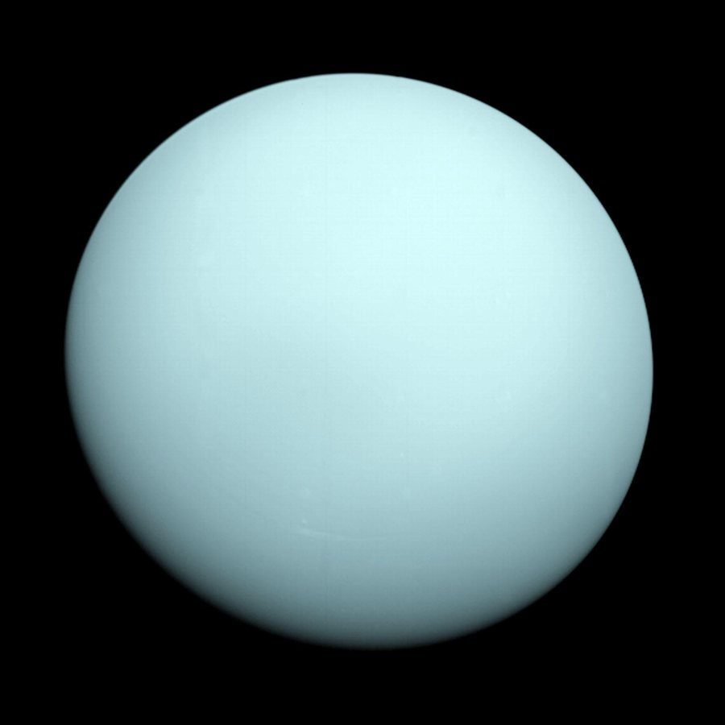

Urano é o sétimo planeta a partir do Sol. É um gigante de gelo, formado principalmente por água, metano e amônia em volta de um pequeno núcleo rochoso. Sua característica mais marcante é girar praticamente deitado, como uma bola rolando ao longo da sua órbita.
Cerca de -195 °C, podendo chegar a -224 °C
50.724 km de diâmetro (4 vezes o da Terra)
Entre 2,6 bilhões e 3,2 bilhões de km